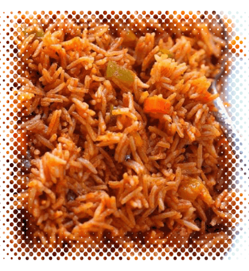

Jollof rice

Description
Ingredients
For the Stew Base:
- 1 pound (475g) plum tomatoes (about 3 medium tomatoes), cored and roughly chopped
- 2 medium (7-ounce; 200g) red bell peppers or 2 red shepherd peppers (see note), stemmed, seeded, and roughly chopped
- 1 medium (8-ounce; 225g) red onion, roughly chopped
- 1/4 of a Scotch bonnet or habanero pepper, stemmed and seeded
- 1 1/2 cups (355ml) Nigerian stock
For the Jollof Rice:
- 1/4 cup (60ml) peanut, vegetable, or other neutral oil, divided
- 1 medium (8-ounce; 225g) red onion, thinly sliced, divided
- 3 dried bay leaves
- 2 teaspoons Caribbean/Jamaican-style curry powder (see note), plus more if needed
- Kosher or sea salt and freshly ground black or white pepper
- 2 tablespoons (30g) tomato paste
- 3 teaspoons (12g) unsalted butter
- 2 cups (400g) converted long-grain rice or Golden Sella basmati, rinsed
Steps
For the Stew Base:
- In a blender jar, combine tomatoes, red pepper, onion, Scotch bonnet or habanero, and stock. Blend until a smooth puree forms, about 2 minutes. This will yield just shy of 5 cups (1.18L).
- Transfer the stew base to a 3-quart saucier or saucepan, cover partially with a lid to contain splatter, and bring to a boil over medium-high heat. Reduce the heat to medium-low and cook, stirring and scraping the bottom occasionally, until reduced by half (roughly about 2 1/2 cups; 590ml), about 30 minutes. Remove from heat and set aside.
For the Jollof Rice:
- In a 4- or 5-quart pot or Dutch oven, heat 2 tablespoons (30ml) oil over medium heat until shimmering. Add half the sliced onion along with the bay leaves, curry powder, dried thyme, a large pinch of salt, and a large pinch of black or white pepper. Cook, stirring, until the mixture is fragrant and the onions soften slightly, about 3 minutes.
- Stir in tomato paste and 2 teaspoons (8g) butter. Cook, stirring continuously, until the tomato paste darkens, about 3 minutes. Stir in reserved stew base, cover partially with the lid to prevent splattering, and cook at a gentle simmer over medium-low heat until reduced by half, about 15 minutes.
- Stir in stock and bring to a boil over high heat. Season with salt and pepper; if the curry flavor is lacking, you can add more to taste (the curry powder should come through pleasantly but not be overpowering, though this is a question of personal taste).
- Stir in rice until evenly coated in sauce. Cover the pot with a double piece of foil or parchment paper, crimped down around the edges to seal, then top with lid (this will trap steam to lock in the flavor and aid cooking). Reduce the heat to the lowest possible and cook for 20 minutes, then uncover pot and gently stir rice to redistribute. Cover again and continue to cook until rice is just cooked through but still retains a firm bite and the liquid is mostly absorbed, about 15 minutes longer. If rice is undercooked and/or still wet, cover and cook 5 minutes longer.
- Stir in sliced tomato along with the remaining sliced onion and the remaining 1 teaspoon (4g) butter until butter is fully melted.
- Remove from the heat, cover, and let stand 10 minutes. Serve.